|
Ajay Mandlekar I am a Senior Research Scientist at NVIDIA AI in the GEAR lab. I obtained my Ph.D. in Electrical Engineering from Stanford University (2016-2022) advised by Silvio Savarese and Fei-Fei Li. I lead simulation-based research on the GEAR team, with a focus on making simulation a scalable method for training humanoid foundation models. Our research encompasses many different directions, such as synthetic data generation, real-to-sim and sim-to-real methods, extending simulation platforms to new applications such as deformable manipulation and loco-manipulation, and learning algorithms leveraging imitation learning, reinforcement learning, and planning, in simulation. We are hiring for research scientist and engineer roles! Reach out to me if our research directions align with your interests and background. Email / Google Scholar / Twitter / Github / CV |

Recent News
|
PublicationsRepresentative papers are highlighted. See my Google Scholar for a full list. |
|
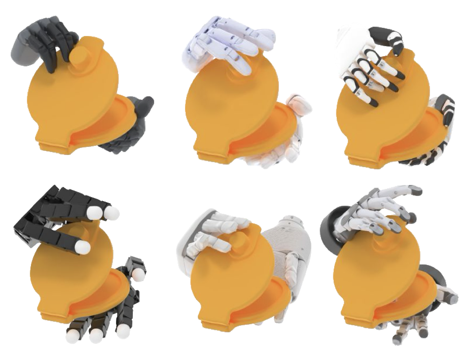 |
DexMachina: Functional Retargeting for Bimanual Dexterous Manipulation
Mandi Zhao, Yifan Hou, Dieter Fox, Yashraj Narang, Ajay Mandlekar†, Shuran Song† Under Review [arXiv] [website] [code] |
|
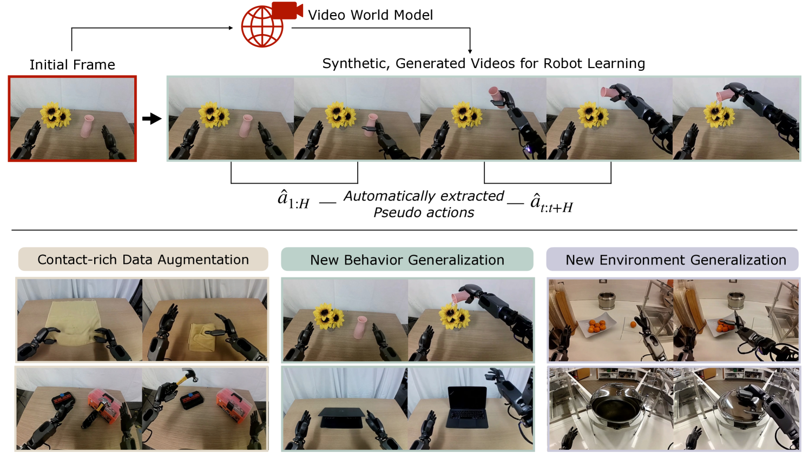 |
DreamGen: Unlocking Generalization in Robot Learning through Video World Models
Joel Jang*, Seonghyeon Ye*, Zongyu Lin*, Jiannan Xiang*, Johan Bjorck, Yu Fang, Fengyuan Hu, Spencer Huang, Kaushil Kundalia, Yen-Chen Lin, Loic Magne, Ajay Mandlekar, Avnish Narayan, You Liang Tan, Guanzhi Wang, Jing Wang, Qi Wang, Yinzhen Xu, Xiaohui Zeng, Kaiyuan Zheng, Ruijie Zheng, Ming-Yu Liu, Luke Zettlemoyer, Dieter Fox, Jan Kautz, Scott Reed†, Yuke Zhu†, Linxi Fan† Under Review [arXiv] [website] [code] |
|
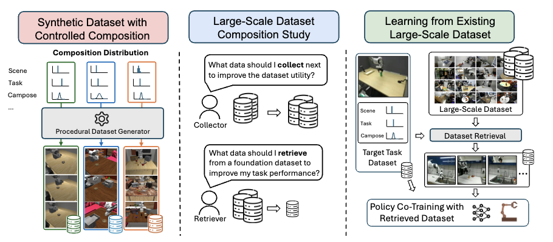 |
What Matters in Learning from Large-Scale Datasets for Robot Manipulation
Vaibhav Saxena, Matthew Bronars*, Nadun Ranawaka Arachchige*, Kuancheng Wang, Woo Chul Shin, Soroush Nasiriany, Ajay Mandlekar†, Danfei Xu† ICLR 2025 [arXiv] [website] [code] |
|
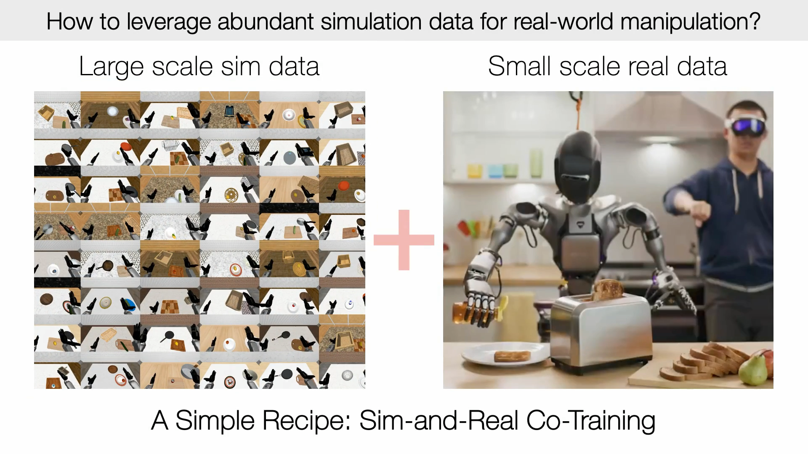 |
Sim-and-Real Co-Training: A Simple Recipe for Vision-Based Robotic Manipulation
Abhiram Maddukuri*, Zhenyu Jiang*, Lawrence Yunliang Chen*, Soroush Nasiriany*, Yuqi Xie, Yu Fang, Wenqi Huang, Zu Wang, Zhenjia Xu, Nikita Chernyadev, Scott Reed, Ken Goldberg, Ajay Mandlekar†, Linxi Fan†, Yuke Zhu† RSS 2025 [arXiv] [website] |
|
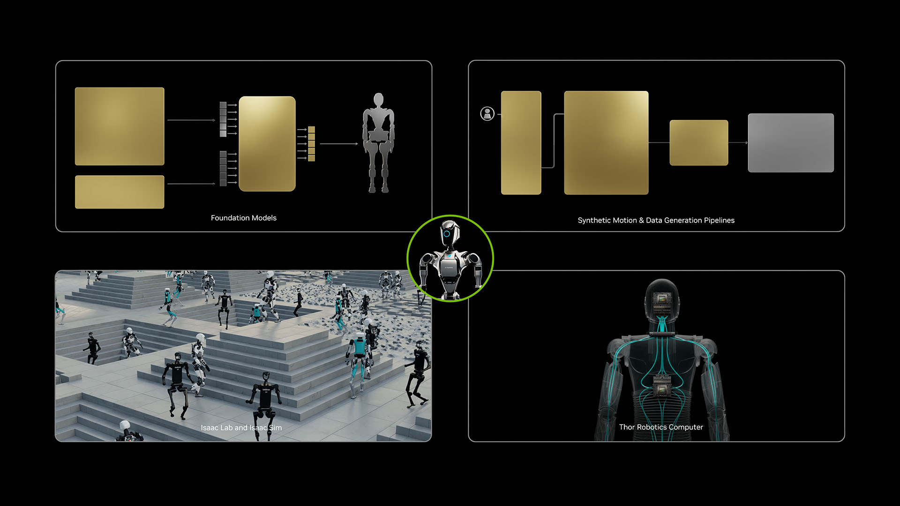 |
GR00T N1: An Open Foundation Model for Generalist Humanoid Robots
NVIDIA Technical Report 2025 [arXiv] [website] [code] |
|
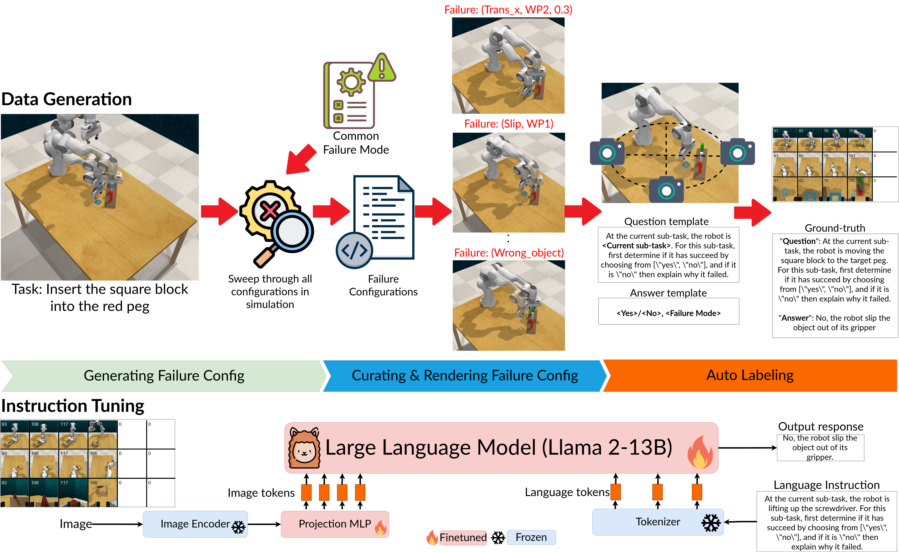 |
AHA: A Vision-Language-Model for Detecting and Reasoning Over Failures in Robotic Manipulation
Jiafei Duan, Wilbert Pumacay, Nishanth Kumar, Yi Ru Wang, Shulin Tian, Wentao Yuan, Ranjay Krishna, Dieter Fox, Ajay Mandlekar†, Yijie Guo† ICLR 2025 [arXiv] [website] [code] |
|
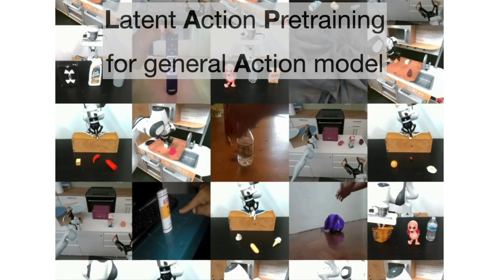 |
Latent Action Pretraining from Videos
Seonghyeon Ye*, Joel Jang*, Byeongguk Jeon, Sejune Joo, Jianwei Yang, Baolin Peng, Ajay Mandlekar, Reuben Tan, Yu-Wei Chao, Bill Yuchen Lin, Lars Liden, Kimin Lee†, Jianfeng Gao†, Luke Zettlemoyer†, Dieter Fox†, Minjoon Seo† ICLR 2025 Best Paper Award at CoRL 2024 LangRob Workshop [arXiv] [website] [code] |
|
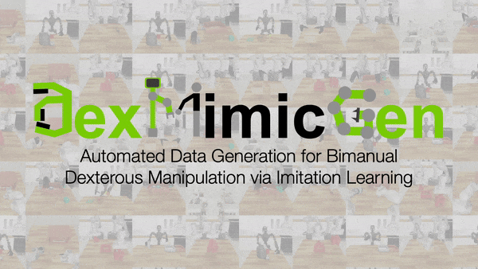 |
DexMimicGen: Automated Data Generation for Bimanual Dexterous Manipulation via Imitation Learning
Zhenyu Jiang*, Yuqi Xie*, Kevin Lin*, Zhenjia Xu, Weikang Wan, Ajay Mandlekar†, Linxi Fan†, Yuke Zhu† ICRA 2025 [arXiv] [website] [code] |
|
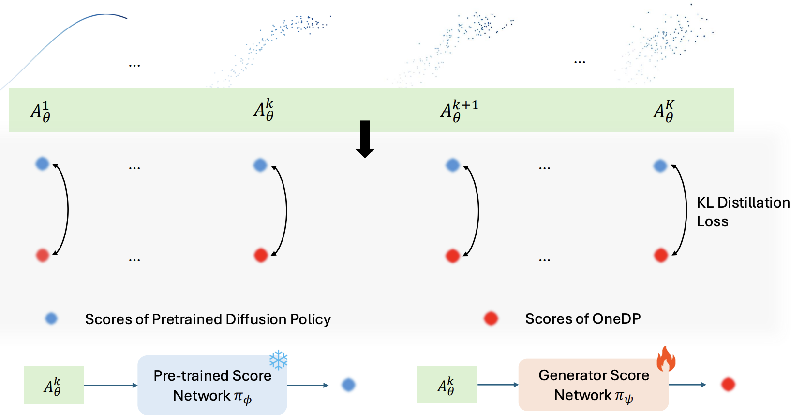 |
One-Step Diffusion Policy: Fast Visuomotor Policies via Diffusion Distillation
Zhendong Wang, Zhaoshuo Li, Ajay Mandlekar, Zhenjia Xu, Jiaojiao Fan, Yashraj Narang, Linxi Fan, Yuke Zhu, Yogesh Balaji, Mingyuan Zhou, Ming-Yu Liu, Yu Zeng ICML 2025 [arXiv] [website] |
|
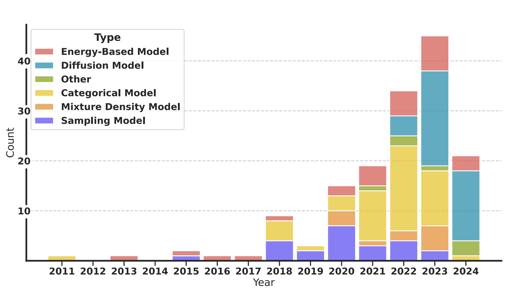 |
Deep Generative Models in Robotics: A Survey on Learning from Multimodal Demonstrations
Julen Urain, Ajay Mandlekar, Yilun Du, Mahi Shafiullah, Danfei Xu, Katerina Fragkiadaki, Georgia Chalvatzaki, Jan Peters IEEE T-RO [arXiv] |
|
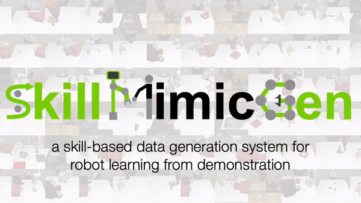 |
SkillMimicGen: Automated Demonstration Generation for Efficient Skill Learning and Deployment
Caelan Garrett*, Ajay Mandlekar*, Bowen Wen, Dieter Fox CoRL 2024 [arXiv] [website] |
|
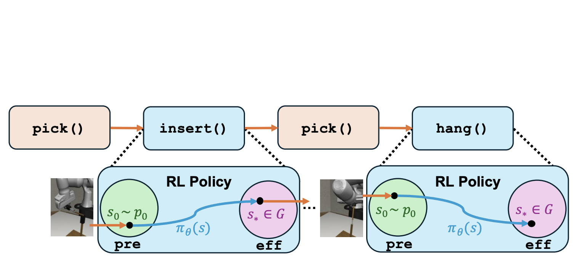 |
SPIRE: Synergistic Planning, Imitation, and Reinforcement Learning for Long-Horizon Manipulation
Zihan Zhou, Animesh Garg, Dieter Fox, Caelan Garrett†, Ajay Mandlekar† CoRL 2024 [arXiv] [website] |
|
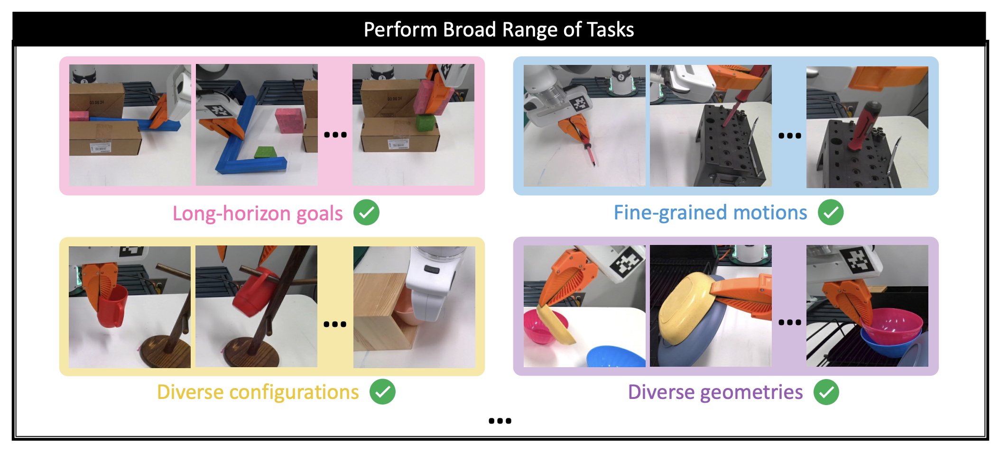 |
NOD-TAMP: Generalizable Long-Horizon Planning with Neural Object Descriptors
Shuo Cheng, Caelan Garrett*, Ajay Mandlekar*, Danfei Xu CoRL 2024 [arXiv] [website] |
|
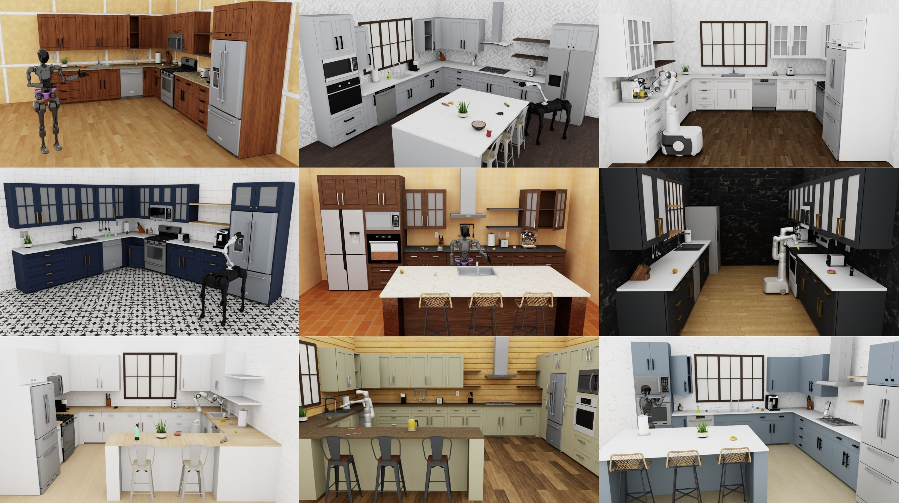 |
RoboCasa: Large-Scale Simulation of Everyday Tasks for Generalist Robots
Soroush Nasiriany, Abhiram Maddukuri, Lance Zhang, Adeet Parikh, Aaron Lo, Abhishek Joshi, Ajay Mandlekar, Yuke Zhu RSS 2024 [arXiv] [website] [code] |
|
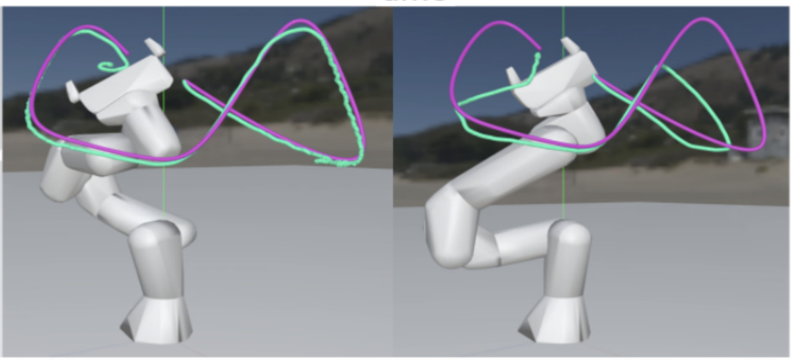 |
Signatures Meet Dynamic Programming: Generalizing Bellman Equations for Trajectory Following
Motoya Ohnishi, Iretiayo Akinola, Jie Xu, Ajay Mandlekar, Fabio Ramos L4DC 2024 [arXiv] [website] |
|
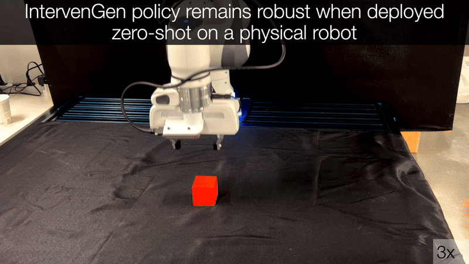 |
IntervenGen: Interventional Data Generation for Robust and Data-Efficient Robot Imitation Learning
Ryan Hoque, Ajay Mandlekar*, Caelan Garrett*, Ken Goldberg, Dieter Fox IROS 2024 [arXiv] [website] |

|
Voyager: An Open-Ended Embodied Agent with Large Language Models
Guanzhi Wang, Yuqi Xie, Yunfan Jiang*, Ajay Mandlekar*, Chaowei Xiao, Yuke Zhu, Linxi Fan†, Anima Anandkumar† TMLR 2024 [arXiv] [website] [code] |
|
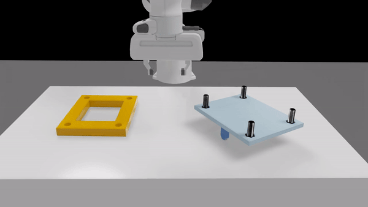 |
MimicGen: A Data Generation System for Scalable Robot Learning using Human Demonstrations
Ajay Mandlekar, Soroush Nasiriany*, Bowen Wen*, Iretiayo Akinola, Yashraj Narang, Linxi Fan, Yuke Zhu, Dieter Fox CoRL 2023 Oral at CoRL 2023 Towards Generalist Robots Workshop [arXiv] [website] [code] |
|
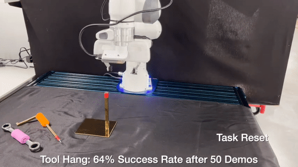 |
Human-in-the-Loop Task and Motion Planning for Imitation Learning
Ajay Mandlekar*, Caelan Garrett*, Danfei Xu, Dieter Fox CoRL 2023 Best Paper Runner-Up and Oral at CoRL 2023 Deployable Workshop [arXiv] [website] |
|
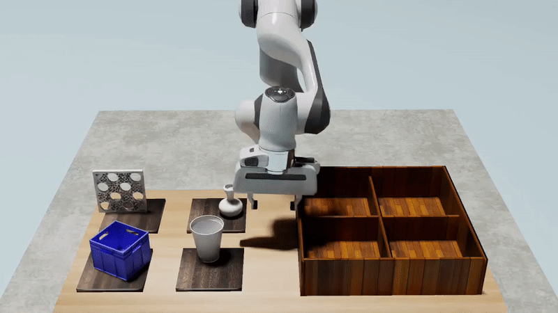 |
Imitating Task and Motion Planning with Visuomotor Transformers
Murtaza Dalal, Ajay Mandlekar*, Caelan Garrett*, Ankur Handa, Ruslan Salakhutdinov, Dieter Fox CoRL 2023 [arXiv] [website] [code] |
|
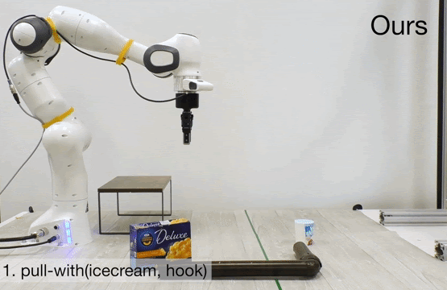 |
Active Task Randomization: Learning Visuomotor Skills for Sequential Manipulation by Proposing Feasible and Novel Tasks
Kuan Fang*, Toki Migimatsu*, Ajay Mandlekar, Li Fei-Fei, Jeannette Bohg IROS 2023 [arXiv] [website] |
|
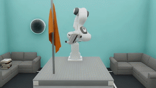 |
ORBIT: A Unified Simulation Framework for Interactive Robot Learning Environments
Mayank Mittal, Calvin Yu, Qinxi Yu, Jingzhou Liu, Nikita Rudin, David Hoeller, Jia Lin Yuan, Pooria Poorsarvi Tehrani, Ritvik Singh, Yunrong Guo, Hammad Mazhar, Ajay Mandlekar, Buck Babich, Gavriel State, Marco Hutter, Animesh Garg IEEE RA-L and ICRA 2023 [arXiv] [website] [code] |
|
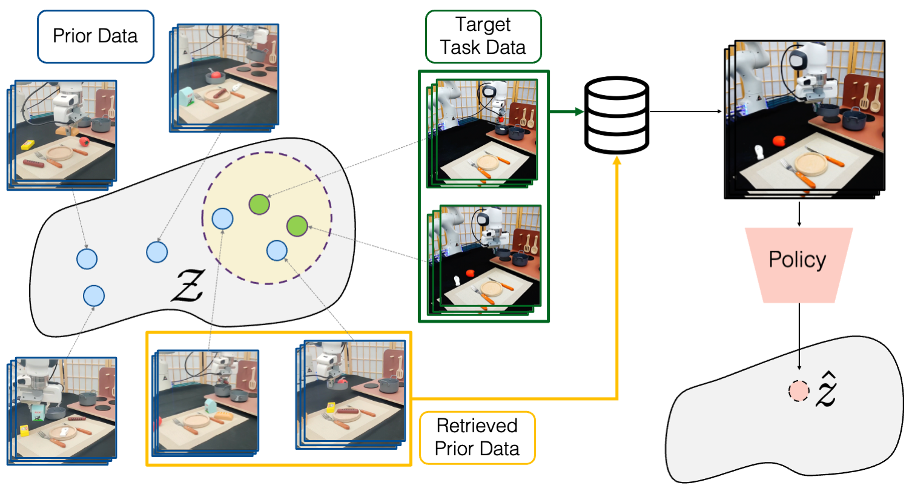 |
Learning and Retrieval from Prior Data for Skill-based Imitation Learning
Soroush Nasiriany, Tian Gao, Ajay Mandlekar, Yuke Zhu CoRL 2022 [arXiv] [website] |
|
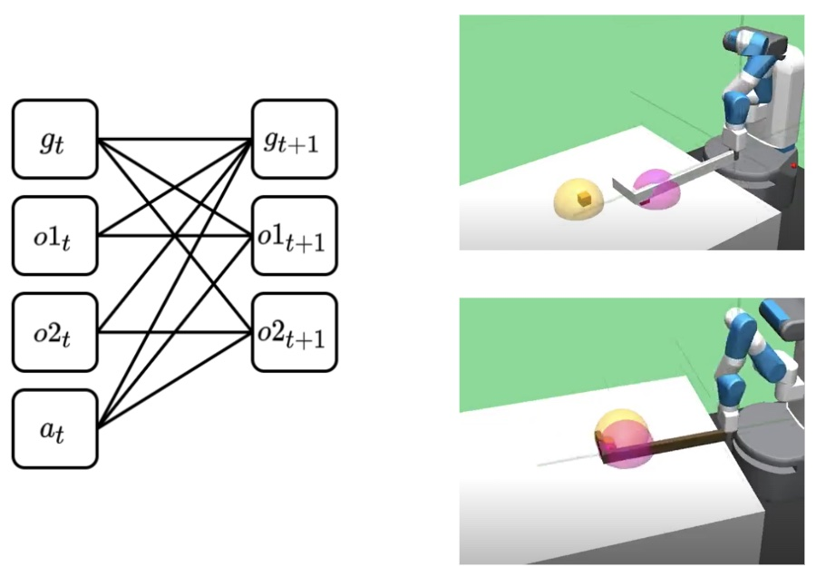 |
MoCoDA: Model-based Counterfactual Data Augmentation
Silviu Pitis, Elliot Creager, Ajay Mandlekar, Animesh Garg NeurIPS 2022 [arXiv] [website] [code] |
|
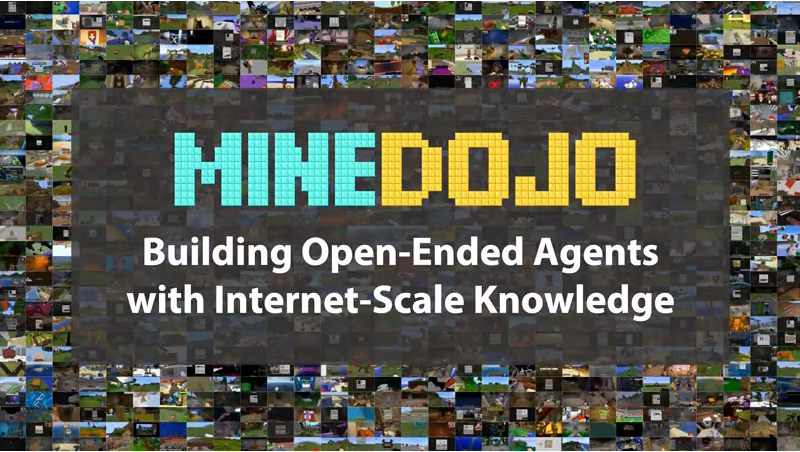 |
MineDojo: Building Open-Ended Embodied Agents with Internet-Scale Knowledge
Linxi Fan, Guanzhi Wang*, Yunfan Jiang*, Ajay Mandlekar, Yuncong Yang, Haoyi Zhu, Andrew Tang, De-An Huang, Yuke Zhu, Anima Anandkumar NeurIPS 2022 (Datasets and Benchmarks Track) Outstanding Paper Award [arXiv] [website] [code] [blog] |
|
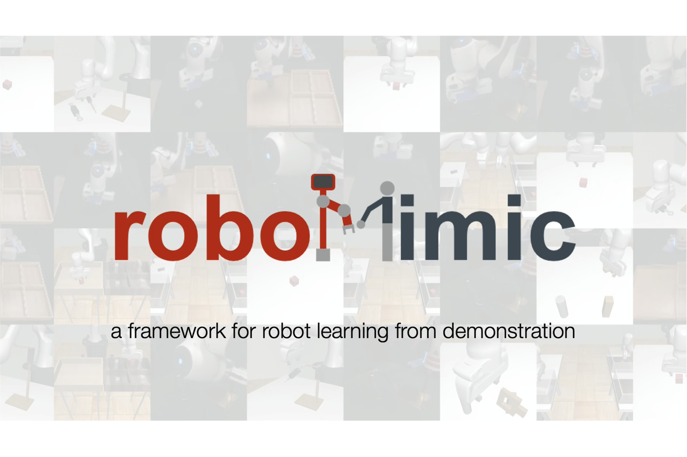 |
What Matters in Learning from Offline Human Demonstrations for Robot Manipulation
Ajay Mandlekar, Danfei Xu, Josiah Wong, Soroush Nasiriany, Chen Wang, Rohun Kulkarni, Li Fei-Fei, Silvio Savarese, Yuke Zhu, Roberto Martín-Martín CoRL 2021 Oral (6.5% acceptance) [arXiv] [website] [video] [code] [blog] |
|
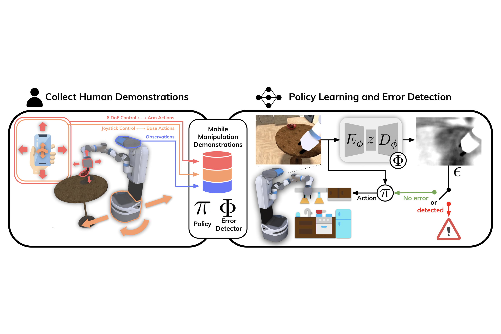 |
Error-Aware Imitation Learning from Teleoperation Data for Mobile Manipulation
Josiah Wong, Albert Tung, Andrey Kurenkov, Ajay Mandlekar, Li Fei-Fei, Silvio Savarese, Roberto Martín-Martín CoRL 2021 [arXiv] [website] [video] |
|
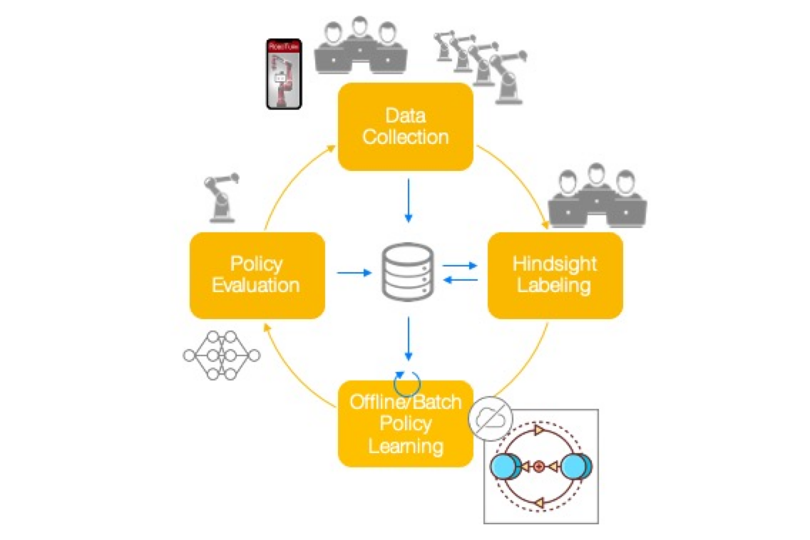 |
S4RL: Surprisingly Simple Self-Supervision for Offline Reinforcement Learning
Samarth Sinha, Ajay Mandlekar, Animesh Garg CoRL 2021 [arXiv] |
|
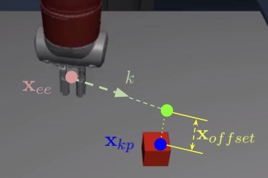 |
Generalization through Hand-Eye Coordination: An Action Space for Learning Spatially-Invariant Visuomotor Control
Chen Wang*, Rui Wang*, Ajay Mandlekar, Li Fei-Fei, Silvio Savarese, Danfei Xu IROS 2021 [arXiv] [website] |
|
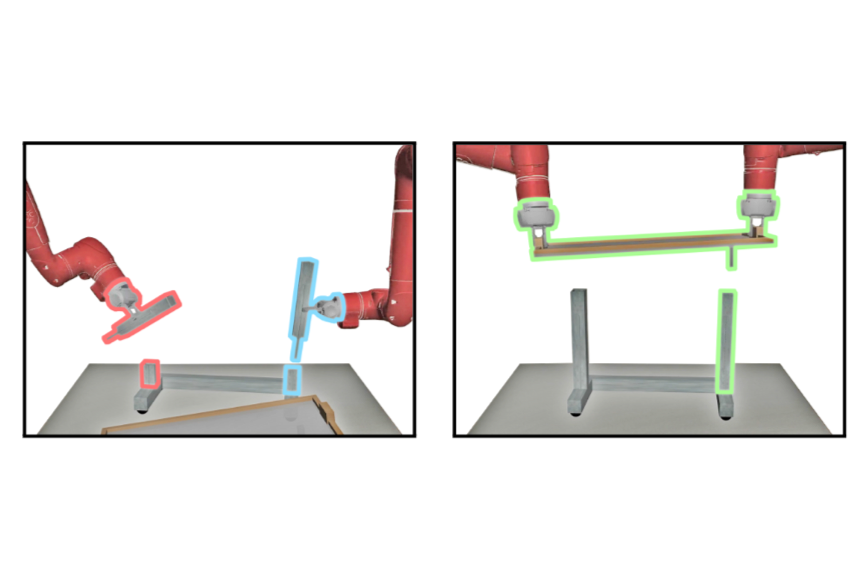 |
Learning Multi-Arm Manipulation Through Collaborative Teleoperation
Albert Tung*, Josiah Wong*, Ajay Mandlekar, Roberto Martín-Martín, Yuke Zhu, Li Fei-Fei, Silvio Savarese ICRA 2021 Best Multi-Robotic Systems Paper Finalist [arXiv] [website] [video] |
|
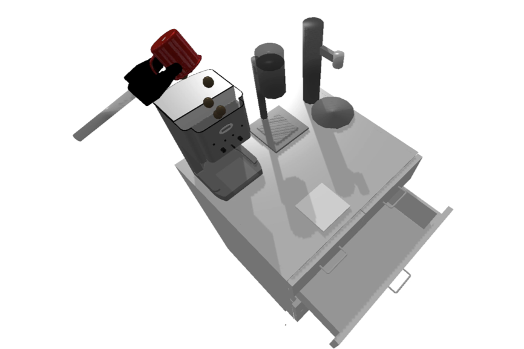 |
Deep Affordance Foresight: Planning Through What Can Be Done in the Future
Danfei Xu, Ajay Mandlekar, Roberto Martín-Martín, Yuke Zhu, Silvio Savarese, Li Fei-Fei ICRA 2021 [arXiv] [website] [video] |
|
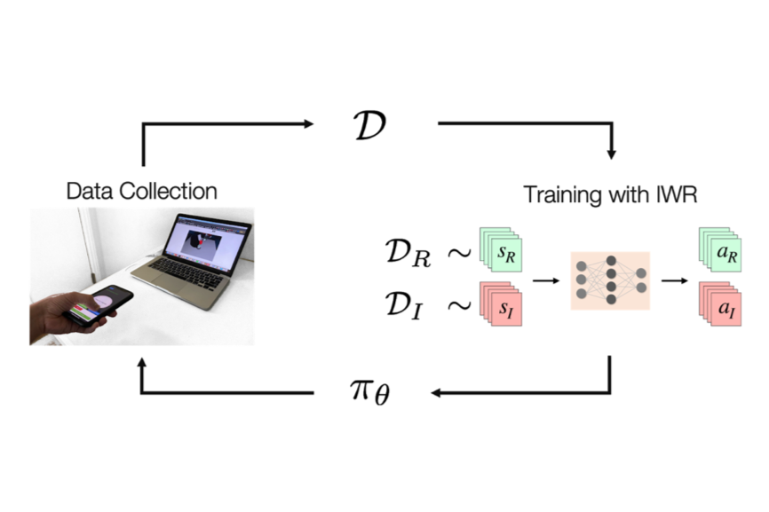 |
Human-in-the-Loop Imitation Learning using Remote Teleoperation
Ajay Mandlekar, Danfei Xu*, Roberto Martin-Martin*, Yuke Zhu, Li Fei-Fei, Silvio Savarese Technical Report 2020 [arXiv] [website] [video] |
|
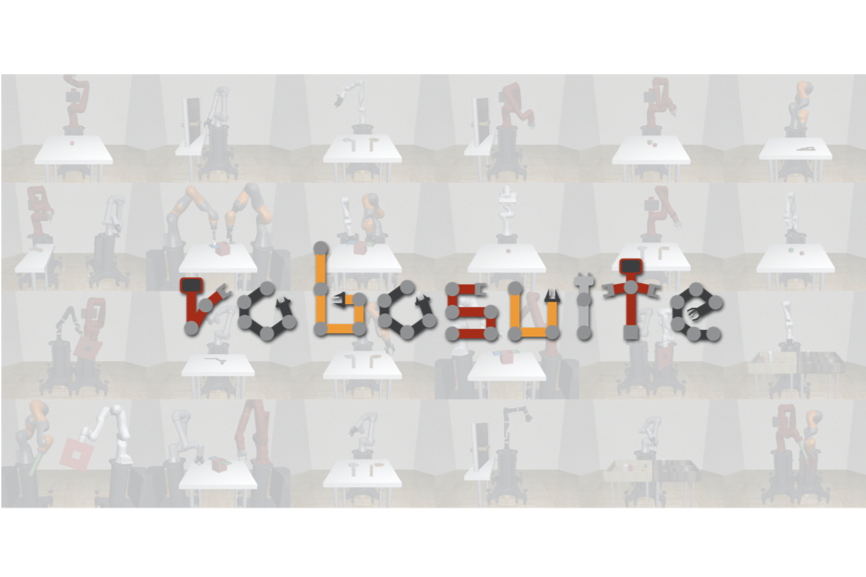 |
robosuite: A Modular Simulation Framework and Benchmark for Robot Learning
Yuke Zhu, Josiah Wong, Ajay Mandlekar, Roberto Martin-Martin Technical Report 2020 [arXiv] [website] |
|
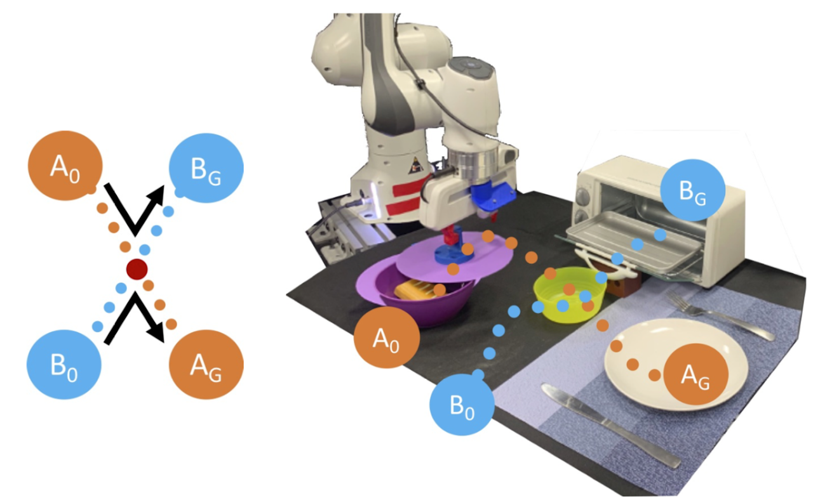 |
Learning to Generalize Across Long-Horizon Tasks from Human Demonstrations
Ajay Mandlekar*, Danfei Xu*, Roberto Martín-Martín, Silvio Savarese, Li Fei-Fei RSS 2020 [arXiv] [website] [video] |
|
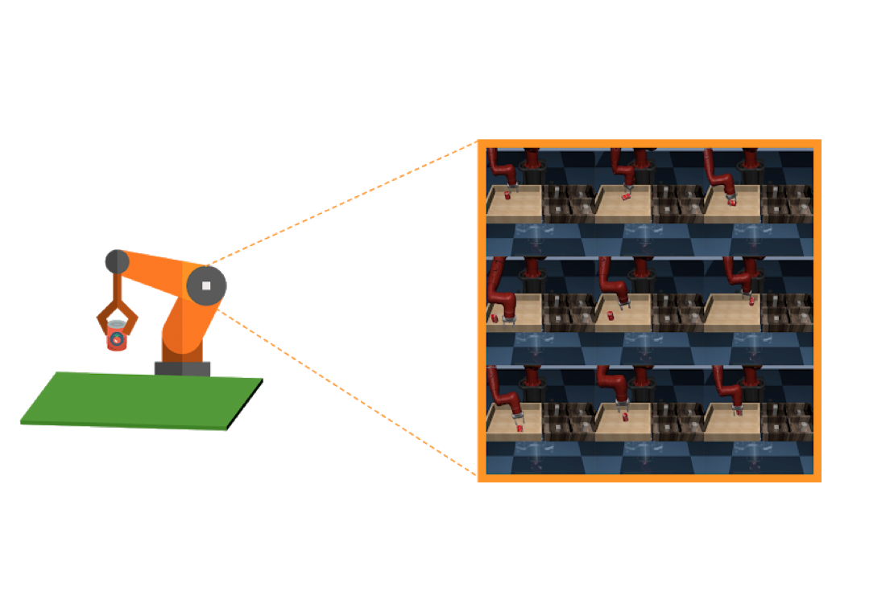 |
IRIS: Implicit Reinforcement without Interaction at Scale for Learning Control from Offline Robot Manipulation Data
Ajay Mandlekar, Fabio Ramos, Byron Boots, Silvio Savarese, Li Fei-Fei, Animesh Garg, Dieter Fox ICRA 2020 [arXiv] [website] [video] |
|
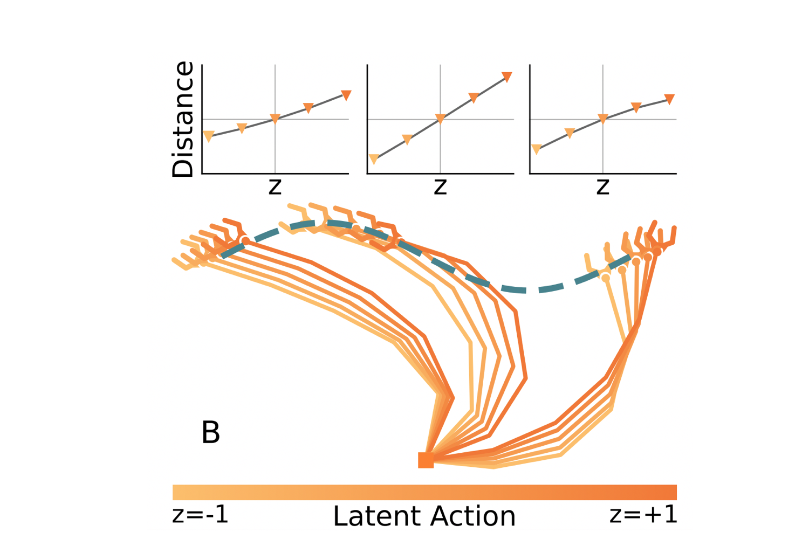 |
Controlling Assistive Robots with Learned Latent Actions
Dylan P. Losey, Krishnan Srinivasan, Ajay Mandlekar, Animesh Garg, Dorsa Sadigh ICRA 2020 [arXiv] [blog] [video] |
|
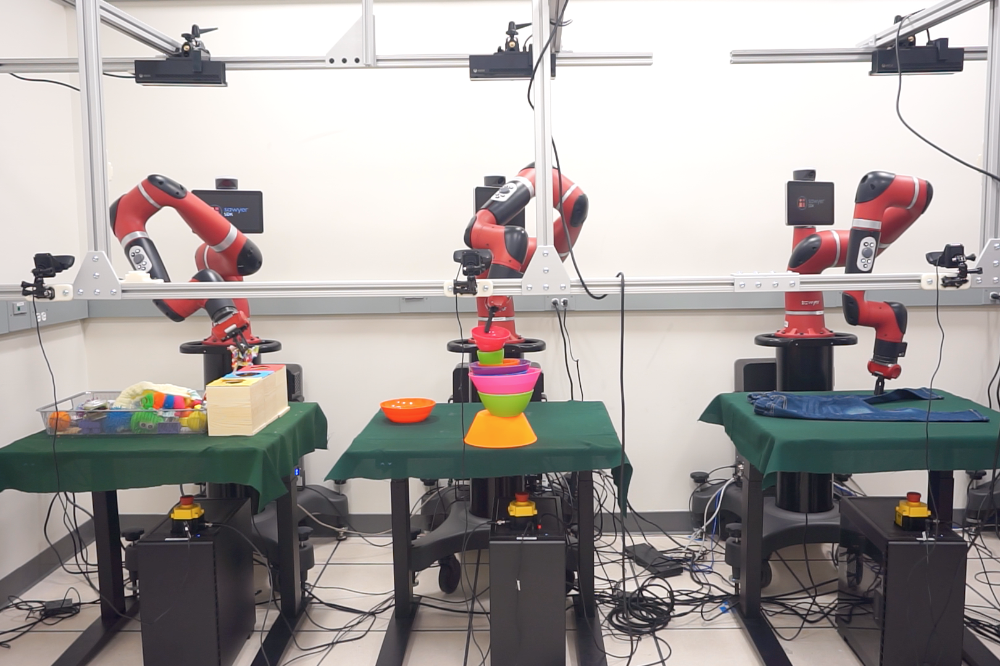 |
Scaling Robot Supervision to Hundreds of Hours with RoboTurk: Robotic Manipulation Dataset through Human Reasoning and Dexterity
Ajay Mandlekar, Jonathan Booher, Max Spero, Albert Tung, Anchit Gupta, Yuke Zhu, Animesh Garg, Silvio Savarese, Li Fei-Fei IROS 2019 Best Cognitive Robotics Paper Finalist [arXiv] [website] [blog] [talk] |
|
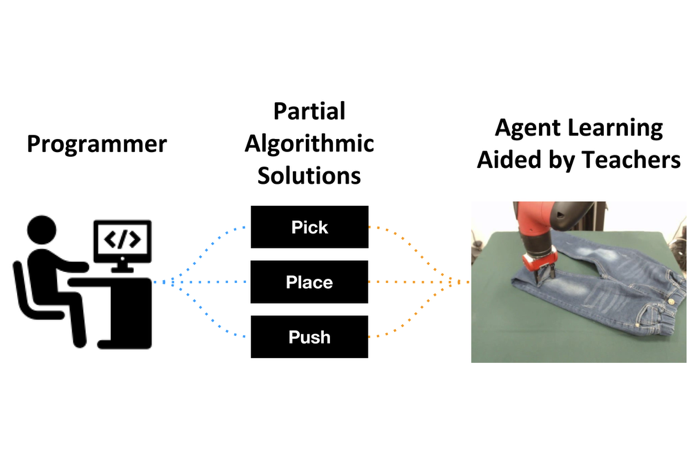 |
AC-Teach: A Bayesian Actor-Critic Method for Policy Learning with an Ensemble of Suboptimal Teachers
Andrey Kurenkov*, Ajay Mandlekar*, Roberto Martín-Martín, Silvio Savarese, Animesh Garg CoRL 2019 [arXiv] [website] [blog] |
|
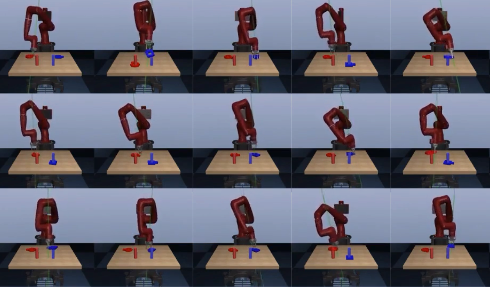 |
RoboTurk: A Crowdsourcing Platform for Robotic Skill Learning through Imitation
Ajay Mandlekar, Yuke Zhu, Animesh Garg, Jonathan Booher, Max Spero, Albert Tung, Julian Gao, John Emmons, Anchit Gupta, Emre Orbay, Silvio Savarese, Li Fei-Fei CoRL 2018 [arXiv] [website] [talk] |
|
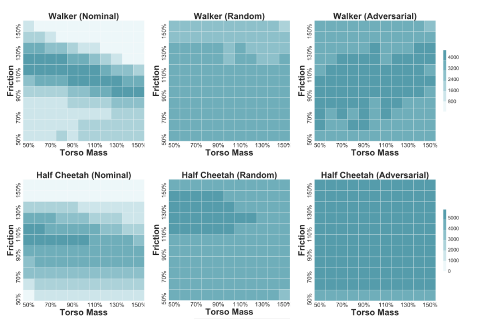 |
Adversarially Robust Policy Learning: Active Construction of Physically-Plausible Perturbations
Ajay Mandlekar*, Yuke Zhu*, Animesh Garg*, Li Fei-Fei, Silvio Savarese IROS 2017 [pdf] [website] [video] |
|
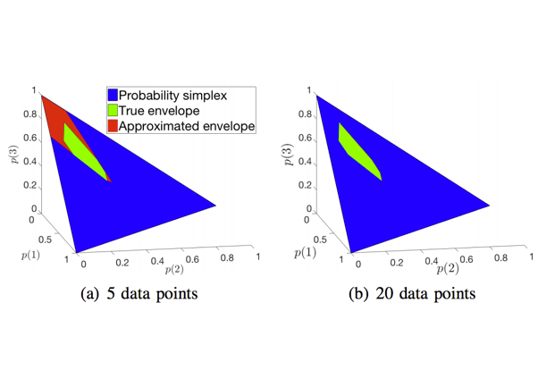 |
Risk-sensitive Inverse Reinforcement Learning via Coherent Risk Models
Anirudha Majumdar, Sumeet Singh, Ajay Mandlekar, Marco Pavone RSS 2017 [pdf] |
PhD ThesisBuilding Robot Intelligence by Scaling Human SupervisionAjay Mandlekar Stanford University 2022 — Advised by Silvio Savarese and Fei-Fei Li [pdf] [video] |
Miscellaneous |
Open-Source Software |
MimicGen — A data generation system for scalable robot learning
robomimic — A framework for robot learning from demonstrations robosuite — A robot simulation benchmark powered by MuJoCo |
Selected Talks |
“Scaling Synthetic Data Generation for Robotics with Point-Based Representations”
— CoRL 2025 GenPriors Workshop, September 2025
“Moving from Data Collection to Data Generation: Addressing the Need for Data in Robotics” — Cornell Robotics Seminar, December 2024 |
NVIDIA Product |
Isaac Lab Mimic features our research on synthetic data generation.
Available projects: MimicGen, DexMimicGen, and SkillGen. |
NVIDIA GTC |
GTC 2025: DexMimicGen and SkillGen were featured in Jensen's GTC keynote. |
Workshop Organization |
Data Generation for Robotics, RSS 2024
Overlooked Aspects of Imitation Learning, RSS 2022 Advances and Challenges in Imitation Learning for Robotics, RSS 2020 |
Academic Service |
Area Chair for CoRL 2025
Reviewer for CoRL, RSS, ICRA, IROS, ICLR, NeurIPS, ICML, CVPR, IEEE T-RO |
History |
Research Scientist, NVIDIA GEAR Lab, July 2025 – Present
Research Scientist, NVIDIA Seattle Robotics Lab, Jan 2022 – June 2025 Ph.D., Electrical Engineering, Stanford University, 2016 – 2022 M.S., Computer Science, Stanford University, 2018 B.S., Electrical Engineering & Computer Science, Caltech, 2016 Monta Vista High School, Cupertino, CA |
|
|